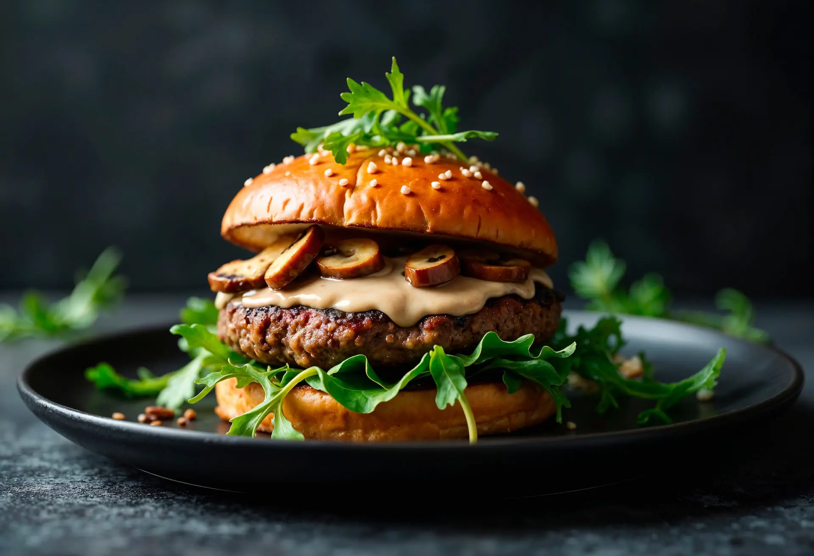
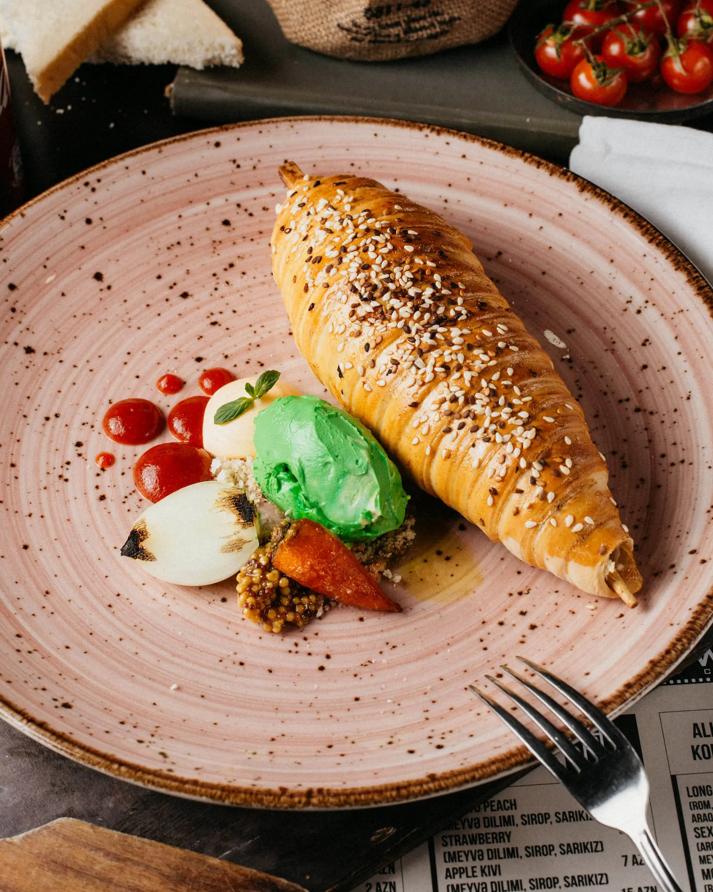
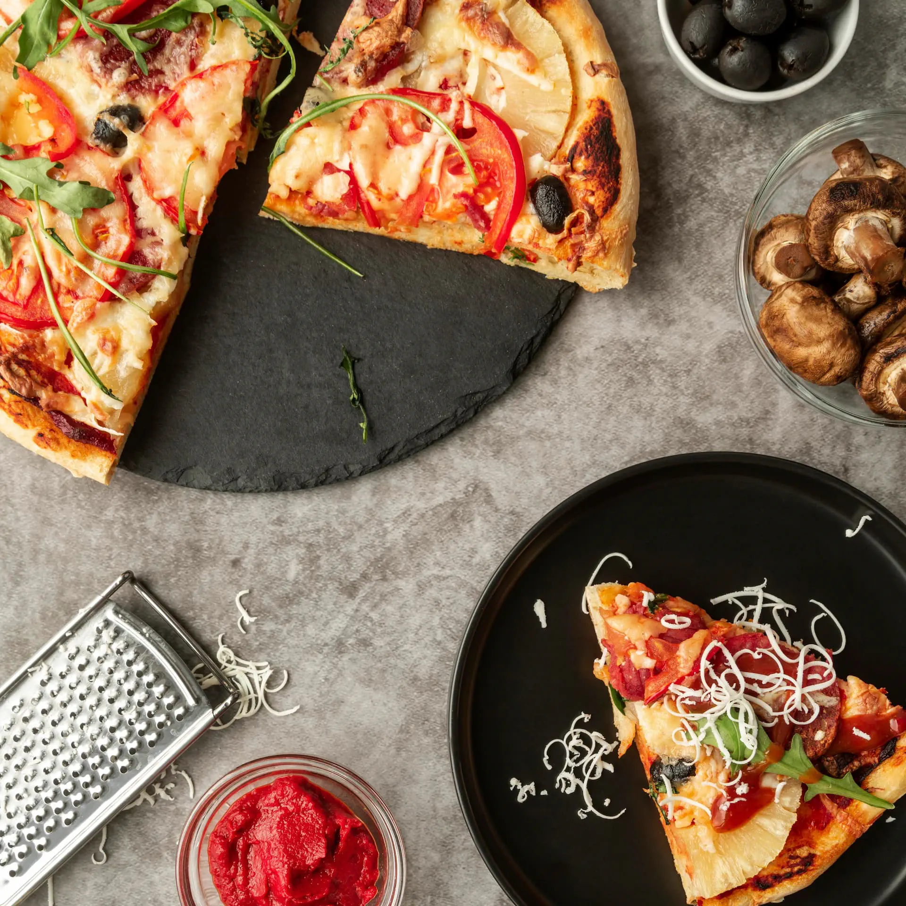
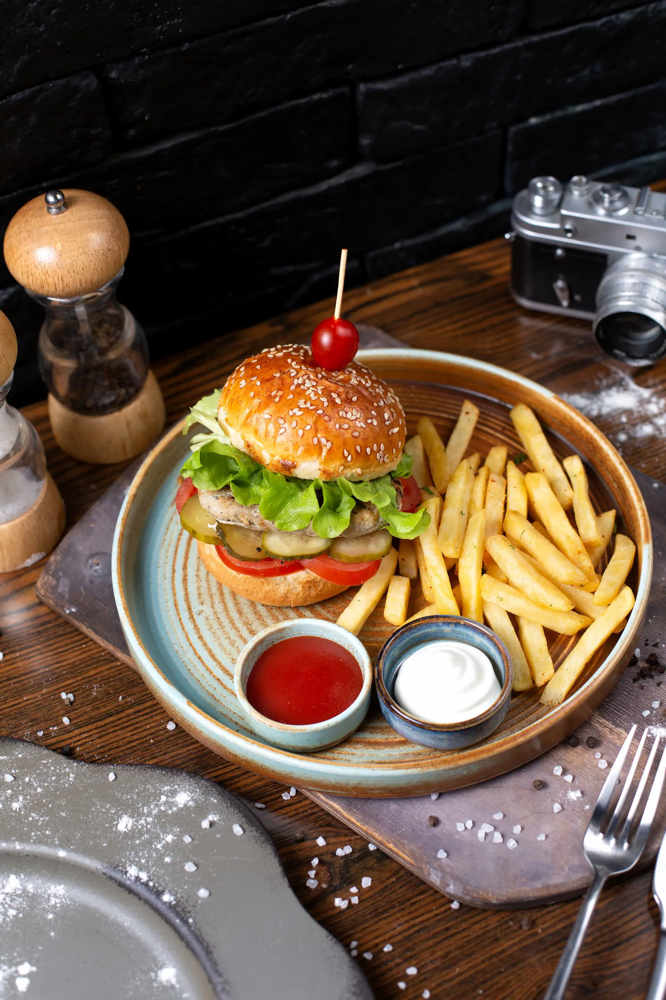
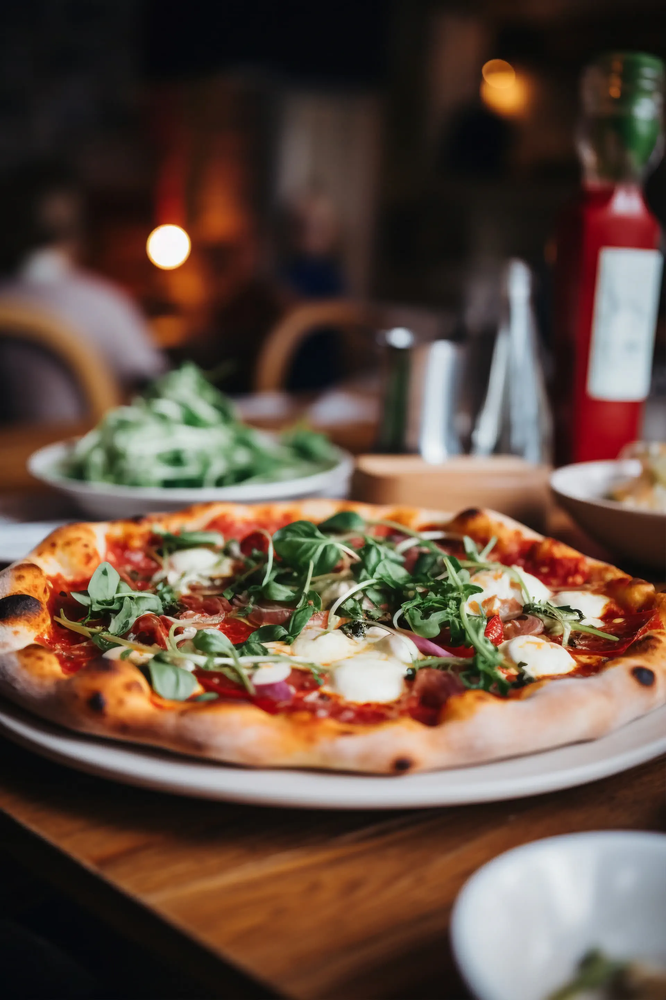
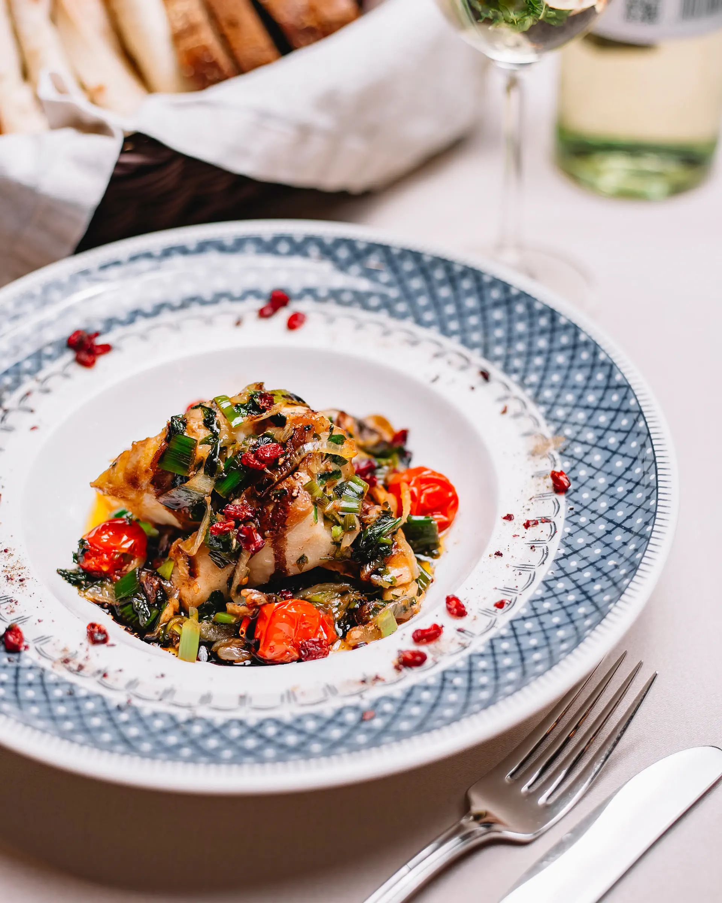
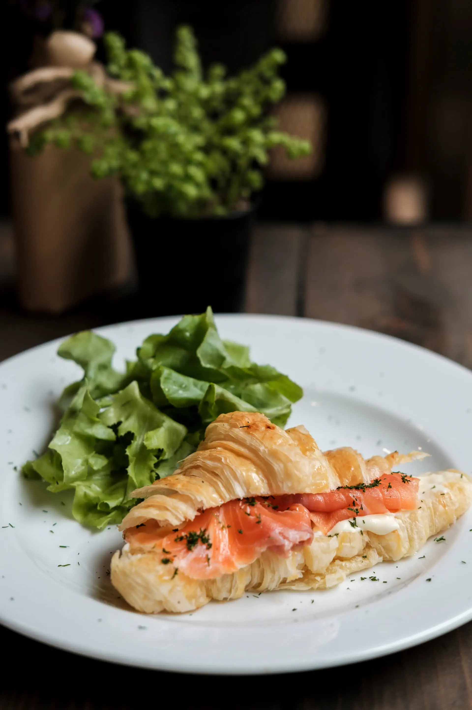
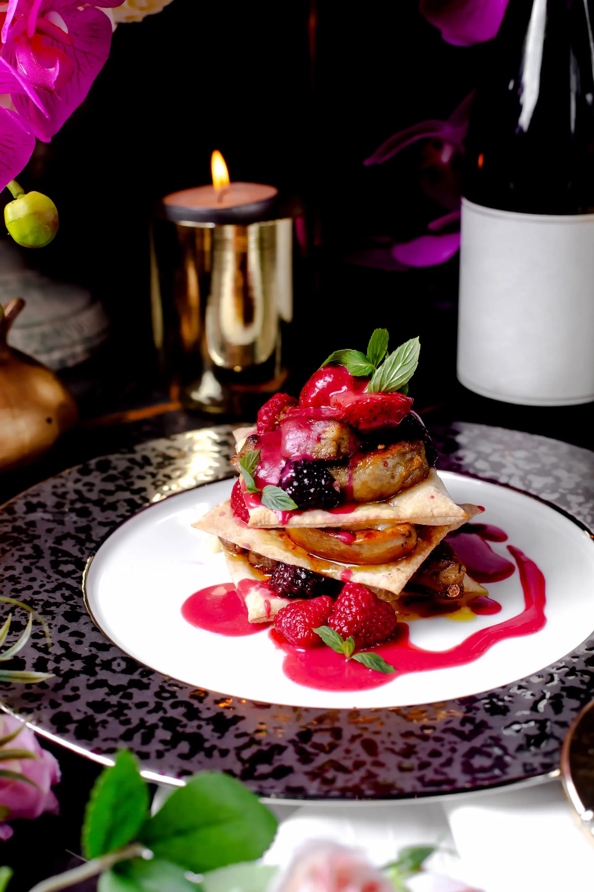

Restauracja
Velour
Restauracja z wyjątkowym widokiem
Zobacz Menu Kierunek - VelourO Nas
W Velour stawiamy na smak i jakość. Łączymy tradycyjne receptury z nowoczesnymi akcentami, tworząc dania pełne aromatu i świeżych składników. W naszej karcie znajdziesz też autorskie nalewki i likiery przygotowywane na miejscu, które idealnie podkreślają smak potraw, a do tego codziennie wypiekamy nasze własne pieczywo, przygotowane z najwyższej jakości mąki, które dopełnia każde danie.
Michał C.
z 350+ opinii
Google








Masz pytania, potrzebujesz informacji lub chcesz zarezerwować stolik? Jeśli tak, napisz do nas na: kontakt@velour.com lub zadzwoń: +45-555-555-555 - zawsze chętnie pomożemy!
GODZINY OTWARCIA
Poniedziałek - Czwartek
10:00 - 23:00
Sobota
10:00 - 23:00
Niedziela
10:00 - 23:00
© 2026 Velour. All rights reserved.